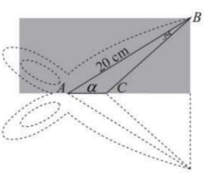

ĐỀ THI TOÁN - ĐỀ SỐ 59 HOT
Phần I: Trắc Nghiệm Nhiều Lựa Chọn
Tóm tắt kiến thức: Nghịch biến của hàm số
Hàm số \( f(x) \) nghịch biến trên khoảng \( (a; b) \) nếu \( f'(x) < 0 \) trên khoảng đó, được xác định qua bảng biến thiên.
Câu 1:
Cho hàm số \( y = f(x) \) có bảng biến thiên như sau:
Hàm số đã cho nghịch biến trên khoảng nào sau đây?
Chọn đáp án:
Tóm tắt kiến thức: Cấp số nhân
Trong cấp số nhân, \( u_{n+1} = u_n \cdot q \). Công bội \( q = \frac{u_{n+1}}{u_n} \).
Câu 2:
Một cấp số nhân có hai số hạng liên tiếp là 6 và 18. Số hạng tiếp theo là
Chọn đáp án:
Tóm tắt kiến thức: Tập xác định của hàm logarit
Hàm \( y = \log_b (u) \) xác định khi \( u > 0 \).
Câu 3:
Tập xác định của hàm số \( y = \log_{\frac{1}{5}}(x - 2) \) là
Chọn đáp án:
Tóm tắt kiến thức: Phương trình mặt cầu
Mặt cầu tâm \( I(a; b; c) \), bán kính \( R \), có phương trình: \( (x - a)^2 + (y - b)^2 + (z - c)^2 = R^2 \).
Câu 4:
Trong không gian \( Oxyz \), phương trình của mặt cầu có tâm \( O \) và đi qua điểm \( M(1; 2; -2) \) là
Chọn đáp án:
Tóm tắt kiến thức: Độ lệch chuẩn
Độ lệch chuẩn của mẫu số liệu là \( \sigma = \sqrt{\text{phương sai}} \).
Câu 5:
Một mẫu số liệu ghép nhóm về chiều cao của một lớp (đơn vị là cm) có phương sai là 6,25. Độ lệch chuẩn của mẫu số liệu đó bằng
Chọn đáp án:
Tóm tắt kiến thức: Hình học không gian
Trong hình chóp tứ giác đều, hai đường chéo của đáy vuông góc. Nếu đường thẳng vuông góc với một đường trong mặt phẳng, nó vuông góc với mặt phẳng đó.
Câu 6:
Cho hình chóp tứ giác đều \( S.ABCD \) (xem hình minh họa bên).

Đường thẳng \( AC \) vuông góc với mặt phẳng nào sau đây?
Chọn đáp án:
Tóm tắt kiến thức: Nguyên hàm
Nguyên hàm của \( f(x) = e^x - \frac{3}{x} \) là \( \int (e^x - \frac{3}{x}) \, dx = e^x - 3 \ln |x| + C \). Trên khoảng \( (-\infty; 0) \), \( |x| = -x \).
Câu 7:
Họ tất cả các nguyên hàm của hàm số \( f(x) = e^x - \frac{3}{x} \) trên khoảng \( (-\infty; 0) \) là
Chọn đáp án:
Tóm tắt kiến thức: Tính chất logarit
\( \log_b (a^2) = 2 \log_b a \), và \( \log_b^2 a = (\log_b a)^2 \).
Câu 8:
Với mọi số thực \( a \) dương, \( \log_3^2 (a^2) \) bằng
Chọn đáp án:
Tóm tắt kiến thức: Vector trong hình lập phương
Trong hình lập phương, tổng các vector được tính bằng cách phân tích tọa độ hoặc tính chất hình học.
Câu 9:
Cho hình lập phương \( ABCD.A'B'C'D' \). Tổng \( \overrightarrow{BA'} + \overrightarrow{D'C'} \) là vector nào sau đây?
Chọn đáp án:
Tóm tắt kiến thức: Phương trình mặt phẳng
Mặt phẳng đi qua điểm \( A(x_0; y_0; z_0) \), vuông góc với vector \( \vec{n} = (a; b; c) \), có phương trình: \( a(x - x_0) + b(y - y_0) + c(z - z_0) = 0 \).
Câu 10:
Trong không gian \( Oxyz \), cho hai điểm \( A(1; -1; 0) \) và \( B(1; 2; 1) \). Phương trình của mặt phẳng đi qua điểm \( A \) và vuông góc với \( AB \) là
Chọn đáp án:
Tóm tắt kiến thức: Tích phân và nguyên hàm
Nếu \( F(x) \) là nguyên hàm của \( f(x) \), thì \( \int_a^b f(x) \, dx = F(b) - F(a) \).
Câu 11:
Cho \( F(x) \) là một nguyên hàm của hàm số \( f(x) \) trên \( [-1; 3] \) và thỏa mãn \( F(-1) = 2 \), \( F(3) = \frac{11}{2} \). Giá trị của \( \int_{-1}^3 [2f(x) - x] \, dx \) bằng
Chọn đáp án:
Tóm tắt kiến thức: Tâm đối xứng của đồ thị
Tâm đối xứng của đồ thị hàm số là giao điểm của tiệm cận đứng và tiệm cận xiên.
Câu 12:
Cho đồ thị hàm số \( f(x) = \frac{3x^2 - 2x - 5}{x - 2} \) có tâm đối xứng là \( I(a; b) \). Giá trị của biểu thức \( a + 3b \) là
Chọn đáp án:
Phần II: Trắc Nghiệm Đúng/Sai
Tóm tắt kiến thức: Hàm số bậc ba
Điểm cực trị của hàm \( f(x) \) là điểm mà \( f'(x) = 0 \). Tập xác định, tính đồng biến/nghịch biến được xác định qua đạo hàm.
Câu 13:
Cho hàm số \( f(x) = x^3 - 6x^2 + 9x - 1 \) có đồ thị \( (C) \). Gọi \( A, B \) là hai điểm cực trị của \( (C) \). Xét các phát biểu sau:
Chọn đáp án cho từng phát biểu:
a)
b)
c)
d)
Tóm tắt kiến thức: Hình chóp tam giác đều
Trong hình chóp tam giác đều, tọa độ các đỉnh được xác định dựa trên hệ trục. Vector pháp tuyến được tính bằng tích có hướng.
Câu 14:
Một vật trang trí dạng hình chóp tam giác đều có chiều cao 110 mm và đáy là tam giác đều cạnh 120 mm như hình vẽ. Chọn hệ trục tọa độ \( Oxyz \) sao cho gốc tọa độ \( O \) trùng với trung điểm của cạnh đáy \( BC \), đỉnh \( B \) thuộc tia \( Ox \), và đỉnh \( A \) thuộc tia \( Oy \) (đơn vị mỗi trục là mm, xem hình vẽ).

Xét các phát biểu sau:
Chọn đáp án cho từng phát biểu:
a)
b)
c)
d)
Tóm tắt kiến thức: Tích phân ứng dụng
Thể tích bể bơi hình trụ: \( V = \pi r^2 h \). Hàm \( h(t) \) biểu thị lượng nước còn lại, với \( h'(t) \) là tốc độ chảy.
Câu 15:
Một bể bơi hình trụ trên mặt đất có đường kính 5 m, được bơm nước vào với tốc độ \( v_0 \) không đổi cho đến khi mực nước cao 1 m. Sau khi được đổ đầy, bể bơi bị thủng ở đáy và nước rò rỉ ra ngoài. Bể bơi rò hết toàn bộ nước trong 8 giờ. Biết rằng lượng nước còn lại trong hồ được mô phỏng bởi hàm \( h(t) \) và tốc độ nước chảy ra ngoài vào thời điểm \( t \) giờ (tính từ lúc bắt đầu rò) được xác định bởi hàm số \( h'(t) = at + b (a, b \in \mathbb{R}) \). Lúc nước chảy hết ra ngoài thì vận tốc nước chảy bằng 0. Xét các phát biểu sau:
Chọn đáp án cho từng phát biểu:
a)
b)
c)
d)
Tóm tắt kiến thức: Xác suất có điều kiện
Xác suất tổng: \( P(A) = P(B)P(A|B) + P(\bar{B})P(A|\bar{B}) \). Xác suất có điều kiện: \( P(B|A) = \frac{P(B)P(A|B)}{P(A)} \).
Câu 16:
Một công ty có hai chi nhánh. Sản phẩm của chi nhánh I chiếm 60% còn chi nhánh II chiếm 40% tổng sản phẩm của công ty. Tỉ lệ sản phẩm bị lỗi của chi nhánh I chiếm 1% còn của chi nhánh II chiếm 2% tổng sản phẩm công ty. Chọn ngẫu nhiên một sản phẩm của công ty. Xét các phát biểu sau:
Chọn đáp án cho từng phát biểu:
a)
b)
c)
d)
Phần III: Trắc Nghiệm Trả Lời Ngắn
Tóm tắt kiến thức: Khoảng cách trong không gian
Khoảng cách giữa hai đường thẳng chéo nhau được tính bằng khoảng cách từ một điểm trên đường này đến mặt phẳng chứa đường kia.
Câu 17:
Cho hình lăng trụ \( ABC.A'B'C' \) có \( (A'ABB') \perp (ABC) \), \( AA' = 2 \), \( AB = 3 \), \( \angle AA'B = 60^\circ \). Khoảng cách giữa hai đường thẳng \( AB \) và \( A'C' \) là bao nhiêu?
Nhập đáp án:
Tóm tắt kiến thức: Bài toán loại trừ
Loại trừ theo quy tắc lặp (loại các vị trí lẻ) để tìm người cuối cùng.
Câu 18:
Nhân dịp khai trương, cửa hàng có một chương trình tri ân dành cho 50 người đầu tiên đứng xếp hàng (theo thứ tự từ 1 đến hết), cuộc chơi sẽ dừng khi tìm được người cuối cùng. Người may mắn nhận được quà thì ban đầu họ đứng số mấy?
Nhập đáp án:
Tóm tắt kiến thức: Thể tích khối tròn xoay
Thể tích khối tròn xoay: \( V = \pi \int_a^b [f(x)]^2 \, dx \).
Câu 19:
Cho hình vuông \( ABCD \) tâm \( O \), có cạnh bằng 2 dm. Gọi \( I, K \) lần lượt là trung điểm cạnh \( AB, CD \). Đồ thị \( (C) \) của hàm số bậc ba nhận \( O \) làm tâm đối xứng và \( A, C \) là hai điểm cực trị tạo với các đoạn thẳng \( IK, IA, CK \) một miền phẳng \( (H) \). Một chiếc đồng hồ cát có dạng một khối tròn xoay được tạo thành khi quay \( (H) \) quanh trục \( IK \). Thể tích của chiếc đồng hồ đó bằng bao nhiêu dm³? (làm tròn kết quả đến hàng phần trăm).
Nhập đáp án:
Tóm tắt kiến thức: Xác suất Bayes
Xác suất Bayes: \( P(A|B) = \frac{P(B|A)P(A)}{P(B)} \). Tỷ lệ được tính dựa trên sơ đồ cây.
Câu 20:
Email rác hay spam email là những email hàng loạt được gửi đi mà không có sự đồng ý của người nhận. Người ta đã sử dụng một thuật toán để phân loại thư rác, biết rằng thuật toán này có thể phân loại đúng đến 99% thư rác và tỉ lệ sai sót khi phân loại thư bình thường thành thư rác là 5%. Thống kê cho thấy, bình quân cứ 1000 thư được phân loại đúng thì có 410 thư rác. Tỉ lệ thư điện tử (email) gửi đến một địa chỉ là thư rác là bao nhiêu %? Kết quả làm tròn đến hàng đơn vị.
Nhập đáp án:
Tóm tắt kiến thức: Đạo hàm và vận tốc
Tốc độ thay đổi của khoảng cách \( f(\alpha) \) là \( f'(\alpha) \), tính bằng đạo hàm theo thời gian.
Câu 21:
Hai lưỡi chất chắc kéo được gắn vào điểm \( A \) như trong hình 6.2.9.

Gọi \( a = 20 \, \text{cm} \) là khoảng cách từ \( A \) đến đầu lưỡi kéo (đường thẳng \( BC \)) và gọi \( \alpha \) là góc giữa \( AB \) với phương ngang. Giả sử một lúc góc \( \alpha \in (0; 90^\circ) \), khoảng cách \( f(\alpha) \) giữa \( A \) và \( C \) tăng lên khi cắt giấy. Giả sử \( \alpha \) đang giảm với tốc độ không đổi là 50 độ/giây. Tại thời điểm \( \alpha = 30^\circ \), hãy tìm tốc độ (cm/s) mà giấy đang bị cắt (làm tròn đến hàng đơn vị). Biết rằng tốc độ mà giấy bị cắt bằng với tốc độ thay đổi của \( f(\alpha) \).
Nhập đáp án:
Tóm tắt kiến thức: Mặt cầu và mặt phẳng đối xứng
Tâm mặt cầu nằm trên giao tuyến của các mặt phẳng đối xứng. Khoảng cách từ tâm đến gốc được tính bằng tọa độ.
Câu 22:
Trong không gian, các mặt phẳng đối xứng của mặt cầu \( (S) \). Biết khoảng cách từ gốc tọa độ \( O \) đến một điểm \( M \) trên mặt cầu \( (S) \) có giá trị lượng, vậy tung độ tâm mặt cầu bằng bao nhiêu? (làm tròn đến hàng phần chục).
Nhập đáp án: